本附录按申请表「软件主要功能」所列十四项功能，逐项给出运行界面与操作说明， 用于完整呈现软件的实际运行状态。全部截图取自真实运行环境，产生方式有二：
uvicorn，监听 127.0.0.1:8015）与门户前端
（vite，监听 127.0.0.1:5178），在真实浏览器中操作门户工作台截取；门户页面的数据
均由底层契约与决策能力实时返回，非静态样例。chiyu 各子命令）
与门面调用演示脚本（docs/copyright/demo-runner.py，仅调用软件公开门面，不含任何
伪造结果）。截图内容即命令的真实标准输出，原始文本留存于 docs/copyright/terminal-output/
目录备查。下表给出功能项与截面截图的对应关系，便于对照查阅。
| 申请表功能项 | 运行界面 | 对应截图 |
|---|---|---|
| （1）契约与配置载体 | 门面调用 | 图 E-1 |
| （2）粒子与本体管理 | 门面调用 | 图 E-2 |
| （3）向量与语义检索 | 门面调用 | 图 E-3 |
| （4）情境装配与降级召回 | 门面调用 | 图 E-4 |
| （5）图存储与关系视图 | 门面调用 | 图 E-5 |
| （6）决策脊柱 | 命令行 + 门面调用 | 图 E-6 至图 E-8 |
| （7）审批治理与续跑 | 门面调用 | 图 E-9 |
| （8）事件、审计与探针 | 门面调用 | 图 E-10 至图 E-11 |
| （9）门户运行时 | 图形界面 + 命令行 | 图 E-12 至图 E-22 |
| （10）插件与工作模式 | 命令行 + 门面调用 | 图 E-23 至图 E-25 |
| （11）模型接入与协议适配 | 图形界面 + 门面调用 | 图 E-26 至图 E-27 |
| （12）命令行与运维工具 | 命令行 | 图 E-28 至图 E-31 |
| （13）质量保证与守卫工具链 | 命令行 | 图 E-32 至图 E-36 |
| （14）版本化与兼容承诺 | 门面调用 | 图 E-37 |
功能定位。对应申请表功能项（1）。软件以租户画像与红线规格承载消费方注入的业务取值， 内核只声明形态与约束；对外暴露门面版本与契约版本，供消费方在构建期做版本钉与兼容性断言。
操作步骤。在项目根目录执行以下命令，依次构造粒子类型集、受控谓词集与红线规格， 装配出租户画像：
python docs/copyright/demo-runner.py contract
运行结果说明。界面自上而下依次显示：内核声明的核心语义角色清单；构造粒子类型集时 若缺少核心语义角色即被拦截并以异常抛出；受控谓词集的知识层与记忆层谓词清单；红线规格的 互斥顶与敏感事项目录；租户画像装配后的域名、粒子类型、自主放行阈值与红线目录； 最后一节演示非法取值（空粒子类型集）在构造期被快速拒绝，验证「不静默接纳」的契约纪律。
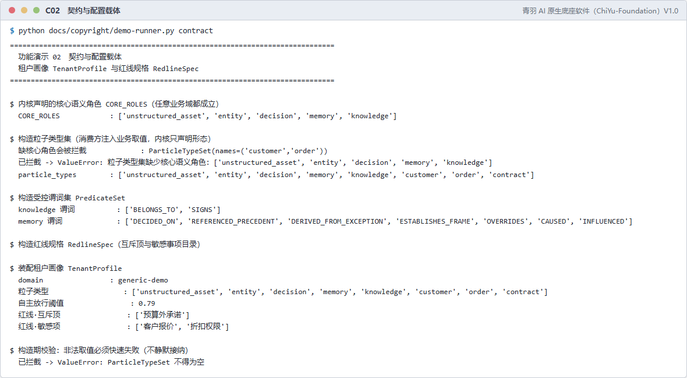
功能定位。对应申请表功能项（2）。软件提供统一的业务实体模型与本体图，以受控谓词 维护实体间关系，配合写时处理钩子完成内容哈希与嵌入补齐，形成可检索的业务事实底座。
操作步骤。执行：
python docs/copyright/demo-runner.py particle
运行结果说明。界面显示两个业务实体（订单、合同）的构造结果，含实体标识、类型、 所在层与状态；随后对每个实体的正文计算确定性签名向量，输出向量维度与 L2 范数， 验证写时嵌入补齐；再以本体图建立两条受控边并列出受控谓词清单；最后一节尝试写入未受控谓词， 被本体图以异常拒绝，验证「写边统一走受控入口、防止多源双写」的设计约束。
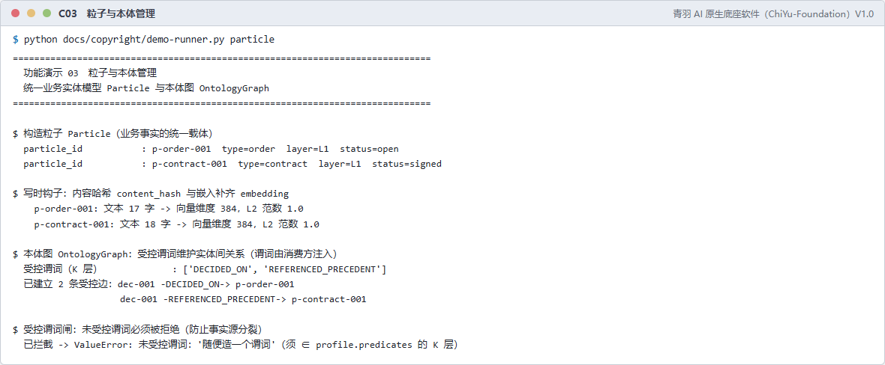
功能定位。对应申请表功能项（3）。软件内置本地离线向量推理能力，向量经维度补齐与 内容哈希处理后写入向量库，支持余弦相似度检索与覆盖度计算。
操作步骤。执行：
python docs/copyright/demo-runner.py vector
运行结果说明。界面先输出推理后端自检信息（后端类型、模型目录、哈希维度、最近一次错误）， 再给出通道可用性与后端标识；随后对一段业务文本求解句向量，如实报告该维度下真向量通道的 状态与回退标签；接着计算确定性哈希签名向量，输出维度、非零维度分布、L2 范数与幂等性校验结果； 末节以查询文本对三条语料做余弦相似度排序，输出相似度分值与排名，验证语义近邻召回效果 （语义相近的两条语句分值显著高于无关语句）。
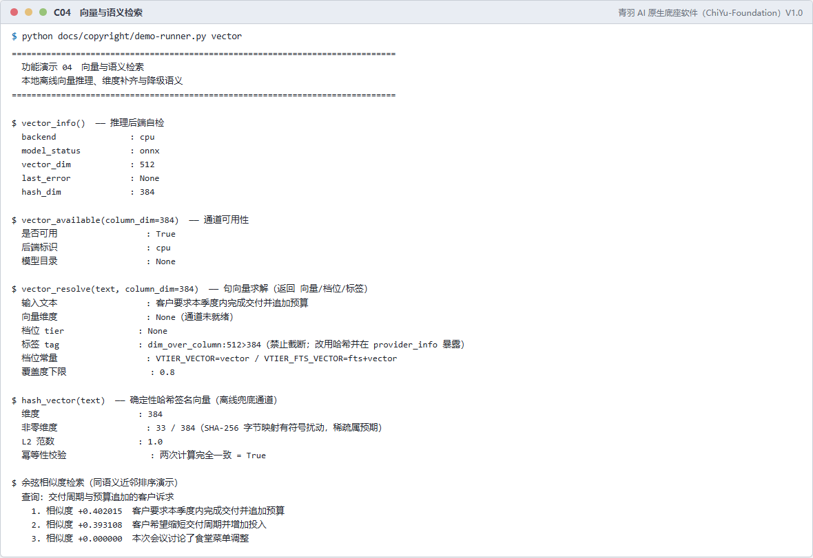
功能定位。对应申请表功能项（4）。软件按分层情境模型装配决策所需上下文， 提供三级降级召回语义与供需缺口检查，在历史先例不足或向量覆盖不全时按既定降级路径取数并留痕。
操作步骤。执行：
python docs/copyright/demo-runner.py context
运行结果说明。界面先输出情境分层常量与七个情境维度的闭集；随后执行三级降级召回， 如实报告命中条目数、召回档位、是否使用真向量与向量覆盖率，并逐条打印降级原因（留痕）； 再以函数将召回结果落入供给层；接着按知识需求装配上下文，输出按层聚合结果与供给报告 （必需项、已供项、缺失项、降级层）；然后做供需缺口检查，逐条列出缺口代码与说明； 末节输出七个维度中的缺失维度清单。
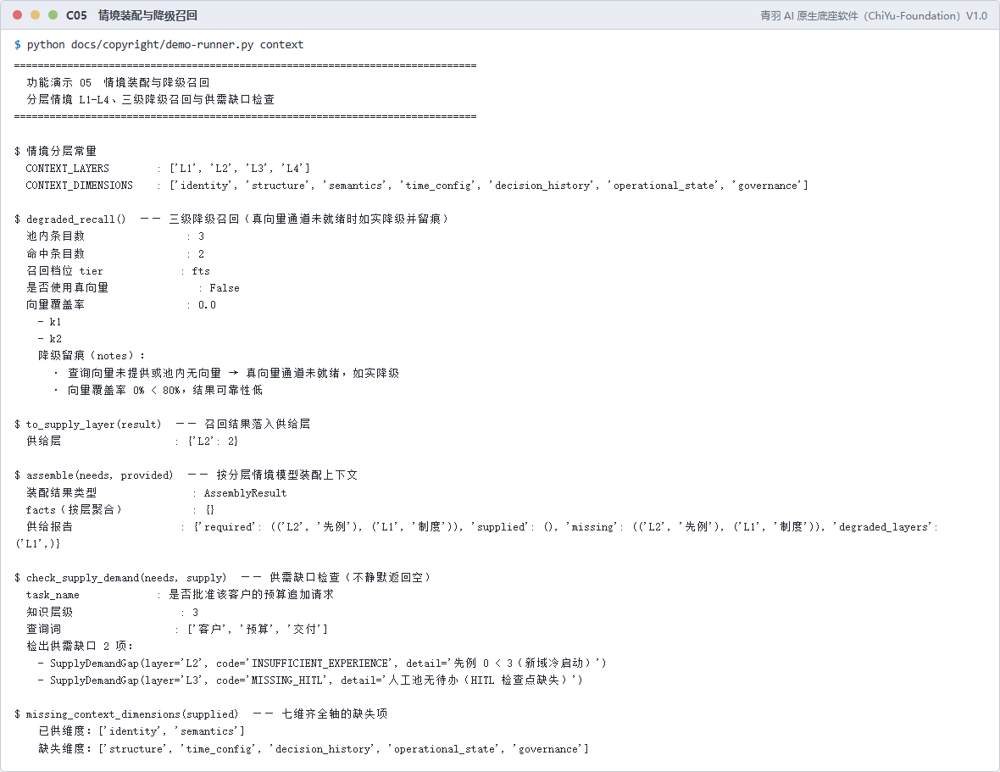
功能定位。对应申请表功能项（5）。软件提供统一的图存储协议与内存、递归查询两种实现， 支持受控谓词校验、一跳出入边查询、多跳遍历（带深度上限与环检测）、关系图谱视图、 时间线视图与决策回链查询。
操作步骤。执行：
python docs/copyright/demo-runner.py graph
运行结果说明。界面依次显示：受控谓词清单；以客户节点为中心的一跳出边与入边查询结果； 以客户节点为起点的多跳遍历结果，含到达节点集合、路径清单与截断标记；关系图谱视图的 节点数、边数、路径数与受控谓词数；时间线叙事视图的四源聚合结果（粒子、图边、事件、决策）， 按时间基准升序排列；末节输出决策回链的四问结果（被谁引用、覆盖谁、被谁覆盖、源自哪条例外） 与受控谓词全集。
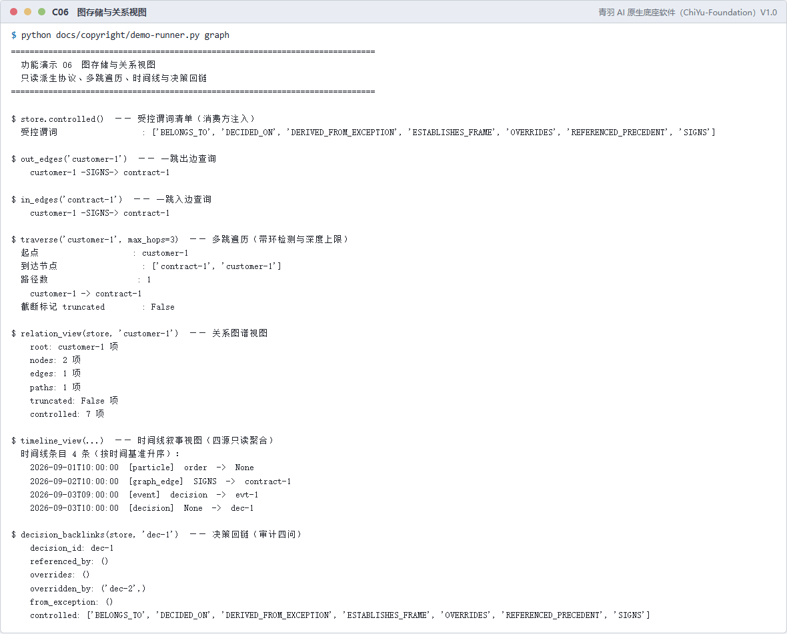
功能定位。对应申请表功能项（6）。软件实现六阶段决策脊柱运行时，按固定顺序执行并 在构造期提供顺序校验；评分子系统按九项评分量规打分并聚合置信度；自主放行闸门以 「红线命中即屏蔽，否则置信度达阈值方放行」为完整判据；决策错误以结构化错误码抛出。
操作步骤一（命令行）。在项目根目录执行：
chiyu decide --topic "是否批准该客户的预算追加请求" chiyu decide --topic "是否批准该客户的预算追加请求" --scores clarity=4,logic=4 --json
运行结果说明（命令行）。界面输出单次决策的完整回执：决策标识、到达阶段、综合置信度
（并标注阈值）、是否自主放行、是否命中红线、缺失的评分项与要素项，以及本次决策所采用的
工作模式与其启用插件。加 --json 后以结构化 JSON 输出同一份回执，便于上游系统解析；
其中可通过 --scores 覆盖单项评分，界面显示置信度随之变化。
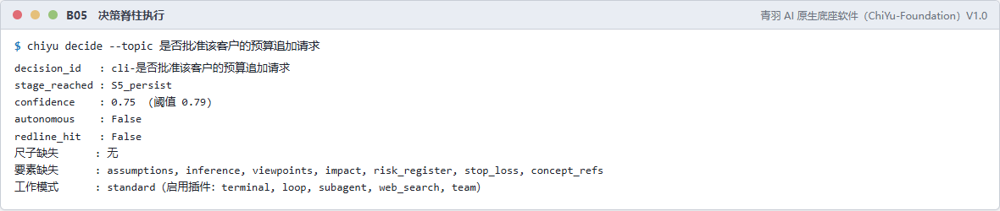
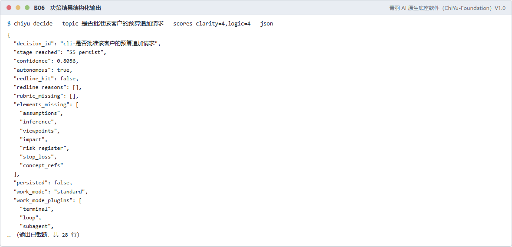
操作步骤二（门面调用）。执行：
python docs/copyright/demo-runner.py spine
运行结果说明（门面调用）。界面先输出顺序契约常量（六阶段顺序、九尺子键、单尺满分、 八要素、自主放行缺省阈值）与顺序自校验结果；随后在三个场景下各执行一次决策： 满分场景（置信度达到阈值、自主放行）、全三分场景（置信度低于阈值、不放行）、 文本含红线事项场景（红线命中、自主放行被屏蔽且给出命中原因）；最后演示阶段顺序被改动时 构造期校验立即报错，验证「顺序即契约、不可重排」。
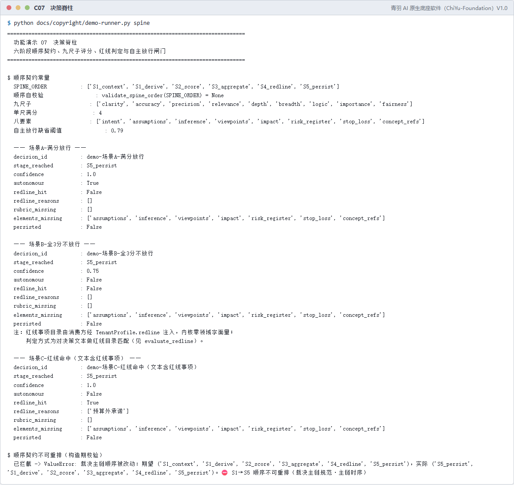
功能定位。对应申请表功能项（7）。审批结论采用待定／通过／驳回三态模型， 待定态决策可凭决策标识续跑并保持幂等；续跑遵循冻结裁定原则，只补落库阶段， 不重算置信度、不重判红线、不改动任何裁定字段；驳回为终态不得经续跑复活。
操作步骤。执行：
python docs/copyright/demo-runner.py approval
运行结果说明。界面先展示第一次执行后的落库内容（结论为待定，等待人工裁定）； 随后模拟人工裁定为通过，并记录冻结的置信度快照；接着执行续跑，界面输出续跑后的置信度 与冻结值一致、裁定字段未被改写、幂等性校验通过三项结果，验证冻结裁定纪律； 末节展示文本含红线事项的决策，界面显示红线命中、命中原因与自主放行被屏蔽， 验证「红线优先、命中即改判驳回」的治理闭环。
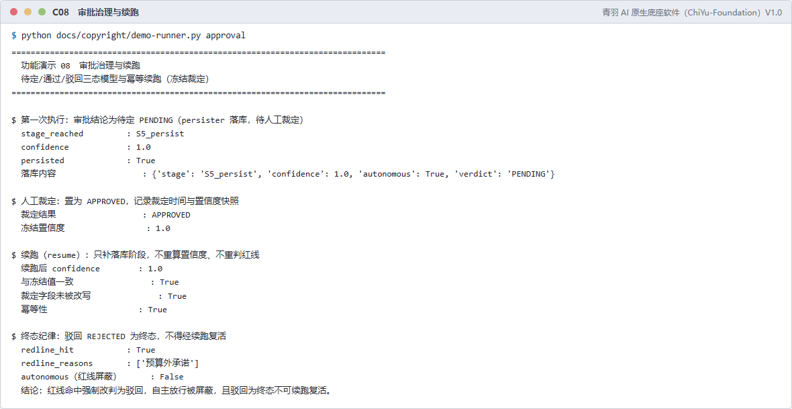
功能定位。对应申请表功能项（8）。软件提供事件总线驱动的能力联动、审计留痕， 以及金丝雀探针用于接入期的连通性与落库自检。
操作步骤一（事件与审计）。执行：
python docs/copyright/demo-runner.py events
运行结果说明。界面显示事件总线的订阅者清单与事件类型常量；发布一条事件后， 输出分发报告（事件标识、成功投递数、失败清单、健康标志）与已持久化事件数、审计日志条数、 计数器统计；随后演示缺标识事件被拒绝，验证「事件必带标识以便回放与去重」； 末节演示订阅者抛异常时该订阅者被计入失败清单而非静默吞掉。
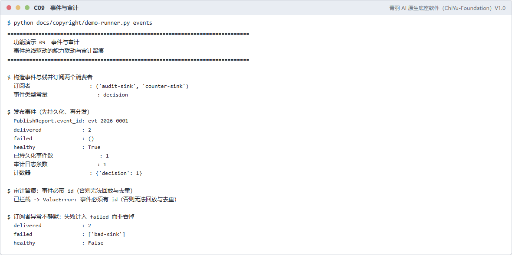
操作步骤二（金丝雀探针）。执行：
python docs/copyright/demo-runner.py canary
运行结果说明。界面先演示「判据不可判定」的情形：未注入记忆网供给与红线决策回调时， 探针如实将对应判据置为未通过，不因「部分判据为真」而放行；随后补齐两判据，界面输出 三判据逐项结论（决策真落库、记忆网真物化、红线挡落库）与总体通过标志，并打印判定细节 （运行时是否落库、事件行、粒子行、实际边数与期望边数、红线决策的落库与处置状态）。
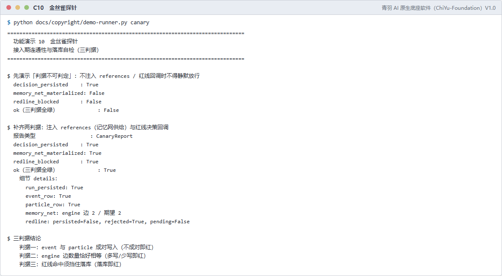
功能定位。对应申请表功能项（9）。软件支持自然语言到页面描述的解析与守卫， 将页面描述渲染为可交互页面，并提供引导式导航与页面存储。
操作步骤一（图形界面）。依次启动门户后端与前端，在浏览器中打开门户地址：
cd web/backend && python -m uvicorn app:app --host 127.0.0.1 --port 8015 cd web && npm run dev # 访问 http://127.0.0.1:5178/
运行结果说明（图形界面）。首次进入为引导式导航：依次选择业务方向、工作流分级与 工作模式，确认后进入对话工作台。工作台左侧为会话栏与「新建会话」入口，中部为对话主区， 右侧为能力面板入口。在对话主区输入指令后，界面显示内核返回的决策阶段轨迹与工具调用回执； 点击导出按钮可将当前对话渲染为可交付页面。
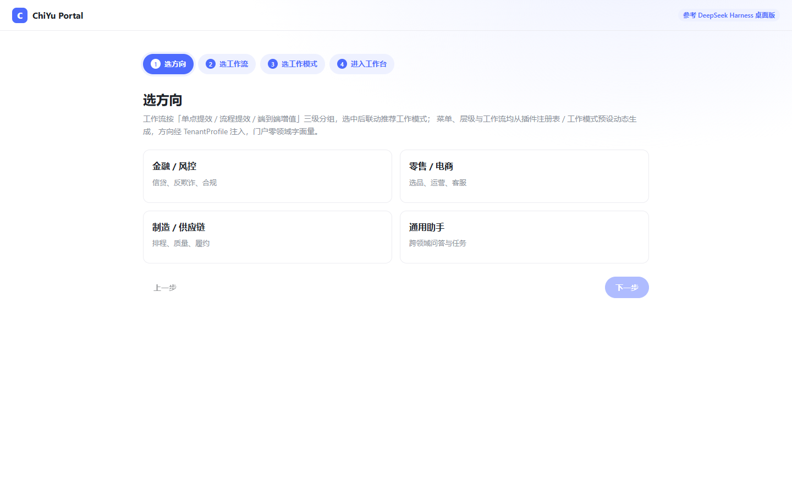
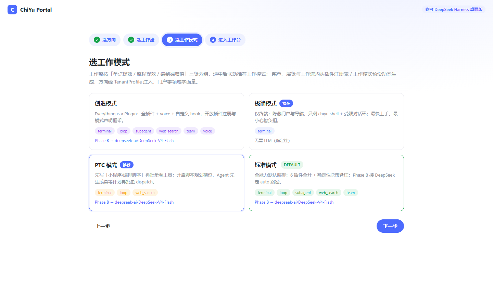
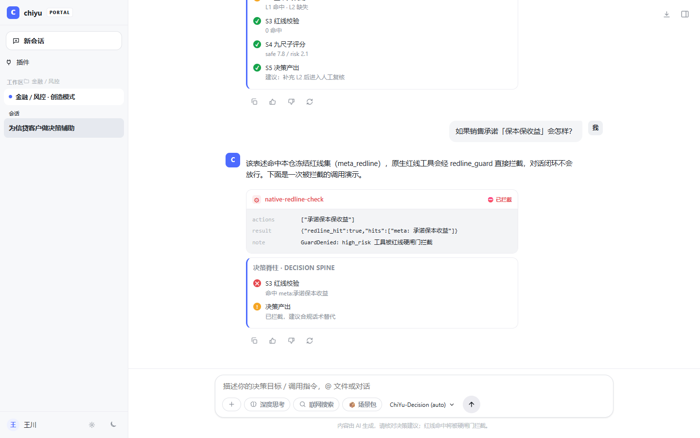
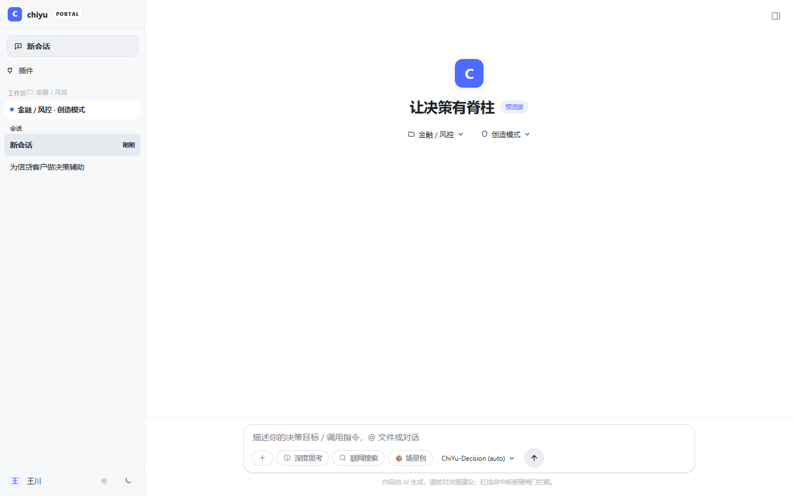
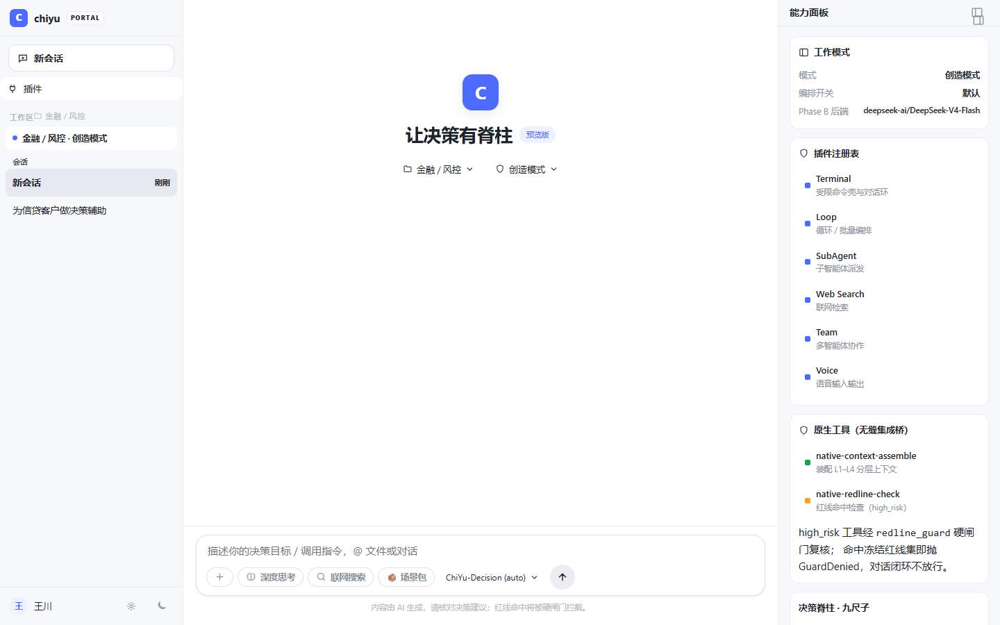
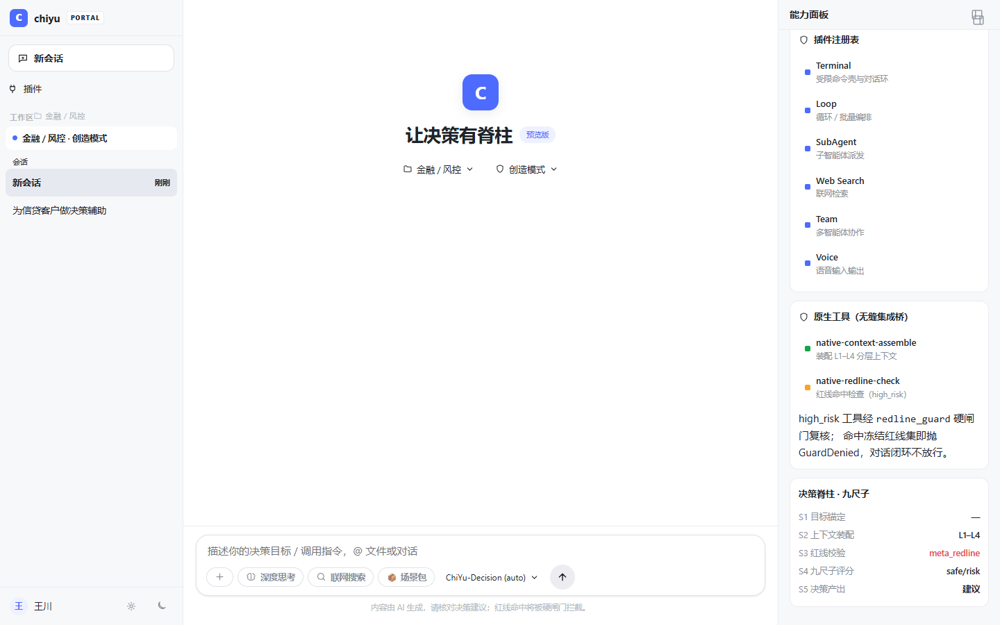
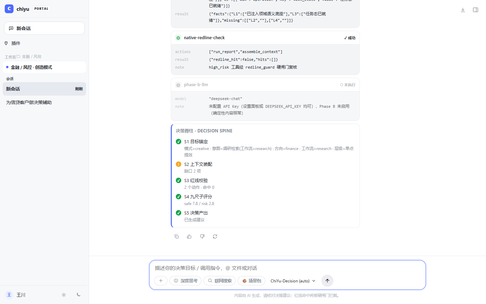
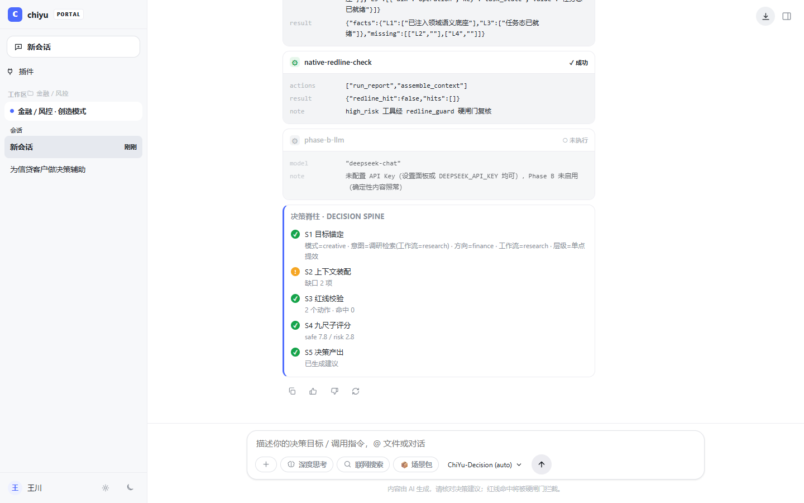
操作步骤二（命令行）。在项目根目录执行：
chiyu portal render --nl "显示本季度全部订单的列表，按金额排序" --title 季度订单 --entity-map 订单=order chiyu portal onboarding
运行结果说明（命令行）。渲染命令将自然语言描述解析为受控页面结构并渲染为 HTML 输出， 界面显示守卫校验通过、解析置信度、是否需澄清以及生成的页面骨架；引导页生成命令输出 完整的引导式导航页 HTML，其菜单项由工作模式预设与插件注册表动态生成。
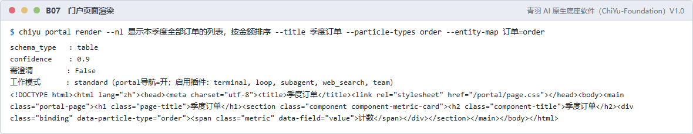
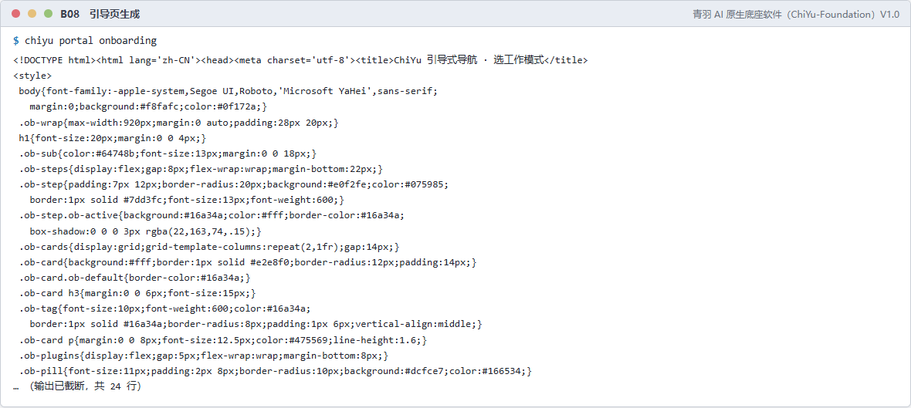
操作步骤三（门面调用）。执行：
python docs/copyright/demo-runner.py portal
运行结果说明。界面显示受控页面类型与组件种类两个闭集；随后演示输入守卫对正常描述 放行、对含脚本注入特征的输入拒绝并给出命中原因；再执行自然语言解析，输出解析置信度、 是否需澄清与页面结构键；接着渲染页面并输出结果标志与 HTML 长度；末节生成引导式导航页， 输出引导步骤数与生成结果类型。
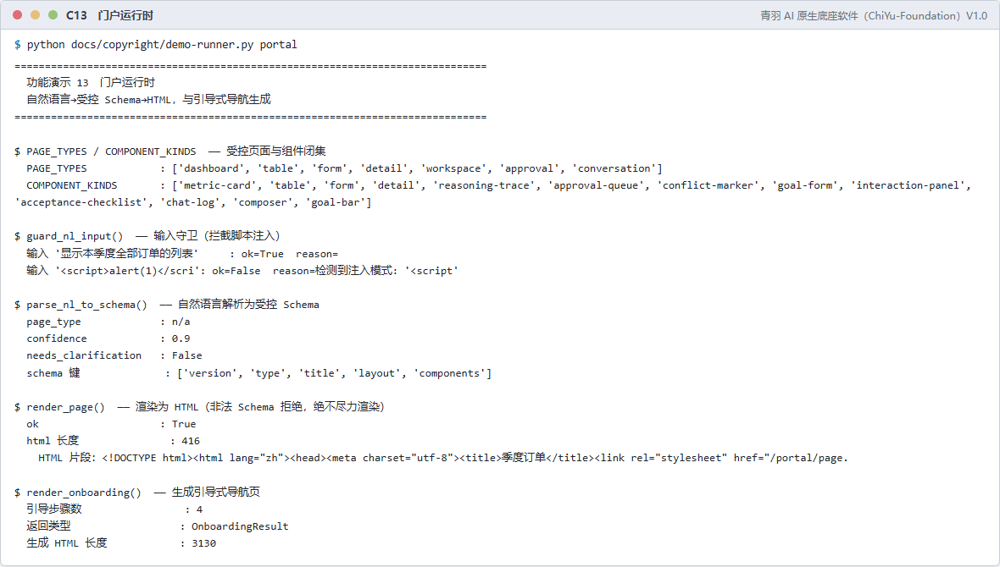
功能定位。对应申请表功能项（10）。软件提供插件注册表与能力槽位声明机制， 内置六类插件并组合为四种工作模式；模式解析在未知或缺失时回落默认并留告警，不中断运行。
操作步骤一（命令行）。执行：
chiyu modes chiyu modes --mode ptc
运行结果说明。第一条命令列出四种工作模式及其说明、启用插件、惰性关闭插件与 后端配置；第二条命令输出单一模式的详情。界面内容完全来自插件注册表与模式预设，不硬编码业务用语。
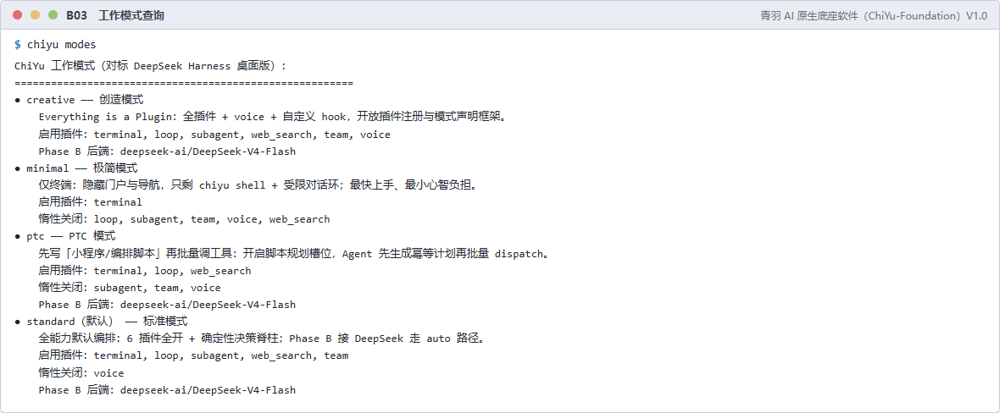
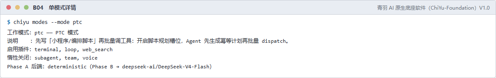
操作步骤二（门面调用）。执行：
python docs/copyright/demo-runner.py plugins
运行结果说明。界面显示六类内置插件（终端、循环、子智能体、联网检索、团队协作、语音） 及其能力声明；随后输出四种工作模式标识与缺省模式；再逐模式解析，列出该模式启用的插件与 惰性关闭的插件；末节演示传入未知模式时的回落行为：界面显示回落后的模式标识与告警文本， 验证「未知模式不中断运行、回落默认并留告警」。
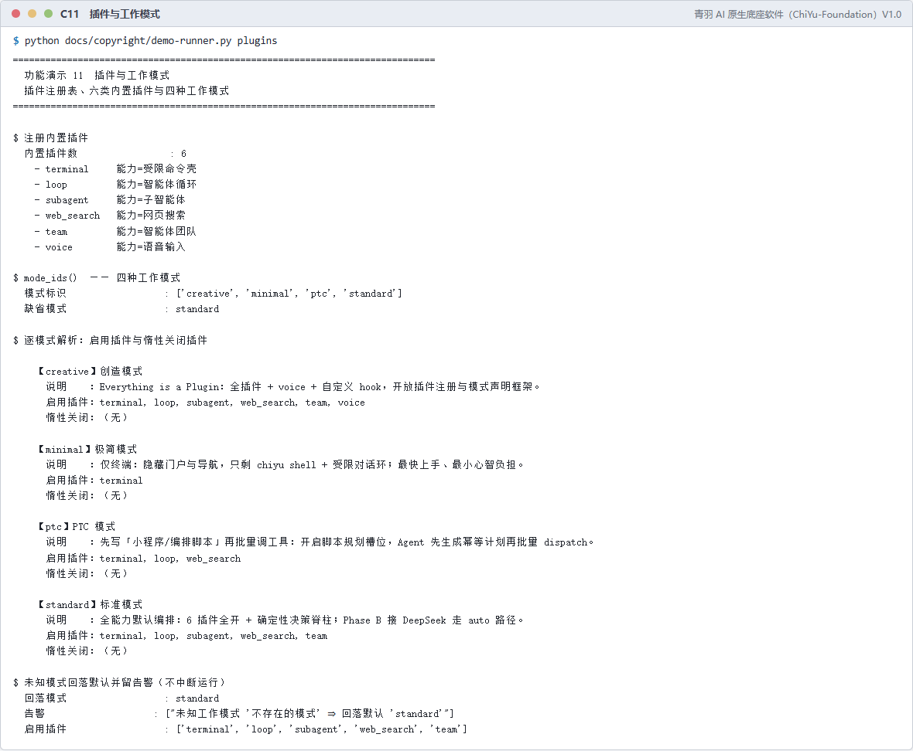
功能定位。对应申请表功能项（11）。软件提供分层的模型接入层与协议服务能力， 含传输层接口契约与命名规范化，支持把底座能力以标准协议暴露给外部智能体与业务系统调用。
操作步骤一（图形界面）。在门户工作台点击「LLM 设置」入口。
运行结果说明（图形界面）。界面给出模型接入的分层配置项，对应本地端点与云端端点的 接入位置；未配置时软件以确定性分支运行，不影响契约与决策能力的完整可用。
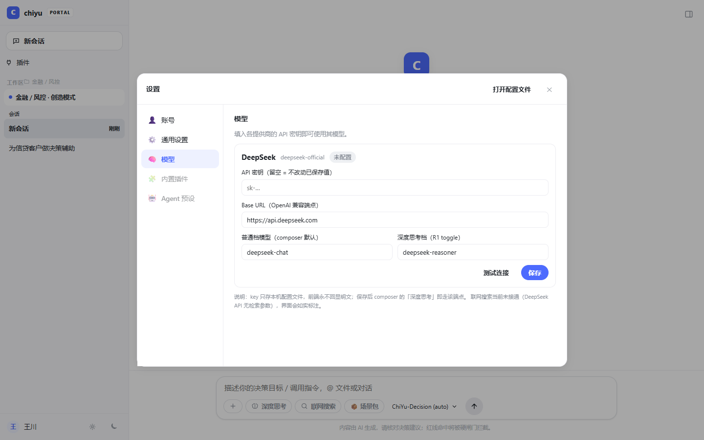
操作步骤二（门面调用）。执行：
python docs/copyright/demo-runner.py mcp
运行结果说明。界面先演示协议工具名的规范化结果（服务名与工具名拼接、非法字符替换）； 随后以内存传输实现承载两项底座能力（决策执行与页面渲染），输出工具清单与工具定义类型， 并逐项发起协议化调用与返回结果；再以桥接器把协议工具注册到工具注册表，输出注册后的工具名清单； 末节断开传输层，验证连接生命周期可控。
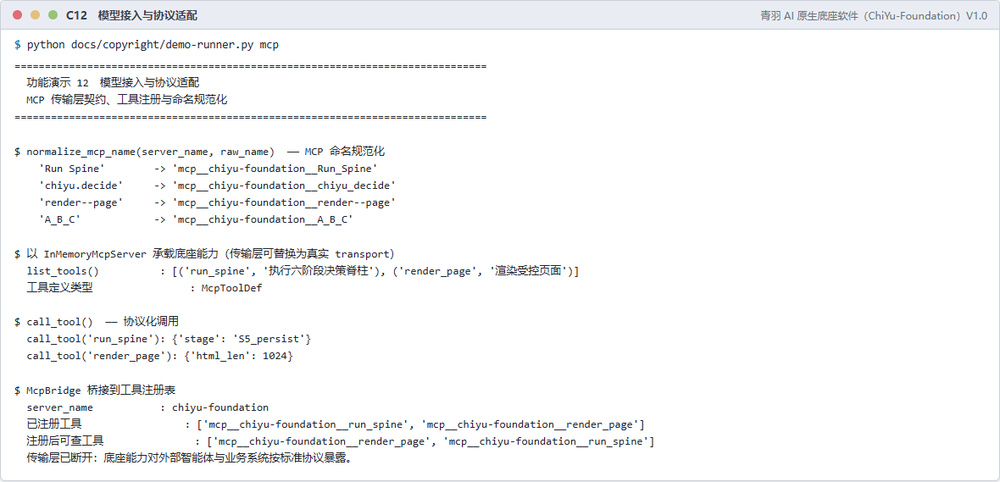
功能定位。对应申请表功能项（12）。软件提供决策执行、门户渲染、引导页生成、 工作模式查询、包内自测、自进化开闸认证、受限命令壳等子命令。
操作步骤。在项目根目录执行命令行入口的帮助与各子命令：
chiyu --help chiyu --version chiyu evolution readiness chiyu selftest
运行结果说明。帮助界面列出全部子命令与用途；版本界面输出版本号；开闸认证界面 逐项列出认证检查（编号、状态、是否具备鉴别力、标题与说明），并在末行给出总体结论 （是否就绪、检查总数、通过数、未通过数与备注数）；包内自测界面运行软件包内全部测试， 输出逐段进度点号与最终通过结果。
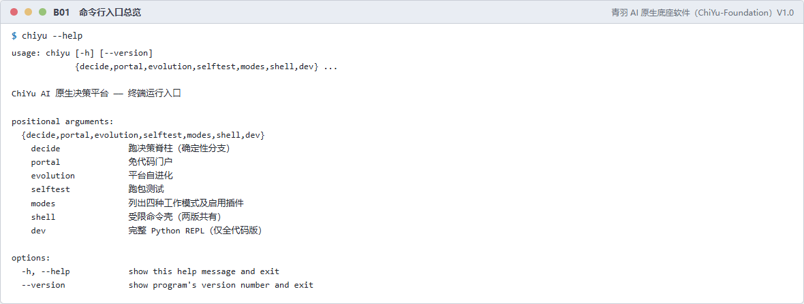
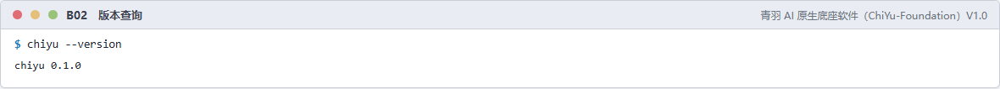
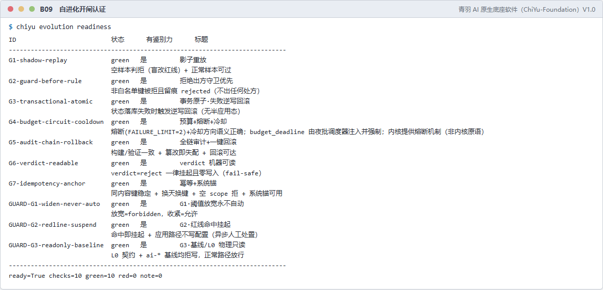
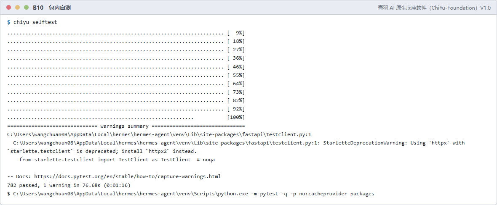
功能定位。对应申请表功能项（13）。软件提供导入方向检查、门面覆盖检查、 零残留检查、分发物与源码同步检查、能力清单生成等守卫脚本，均已接入持续校验流程； 每个守卫要求先做判别力自证，防止「永远通过」的假门禁。
操作步骤。在项目根目录依次执行各守卫脚本：
python tools/check_import_surface.py python tools/check_facade_coverage.py python tools/check_zero_residue.py python tools/check_dist_sync.py python tools/gen_capability_manifest.py
运行结果说明。前四个守卫脚本在执行后输出结论性文本：导入方向守卫输出 「跨分发引用全部落在受控面内」的通过信息；门面覆盖守卫输出门面符号覆盖的比对结论； 零残留守卫输出披露口径的命中计数；分发物同步守卫输出分发物与源码的一致性结论。 能力清单生成脚本则输出机器可读的能力登记清单，供消费方在构建期比对。
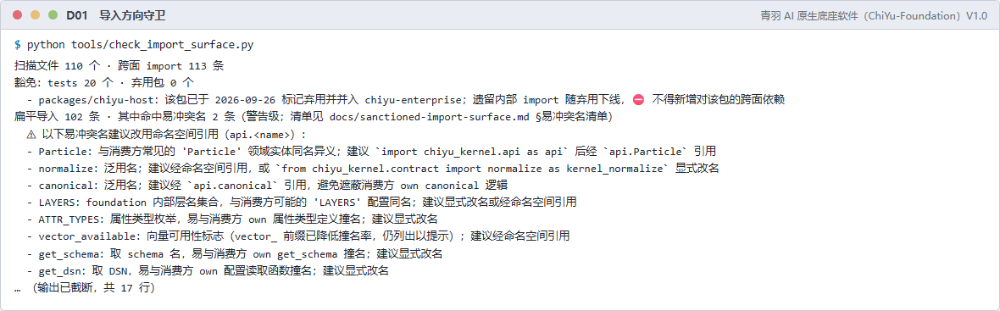
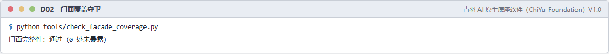
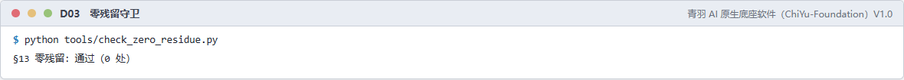
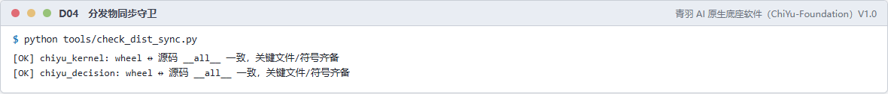
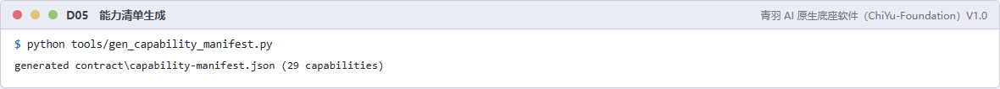
功能定位。对应申请表功能项（14）。能力清单以机器可读方式登记并标注稳定／实验态档位； 对外提供能力查询、能力状态查询与弃用别名查询接口；版本、能力档位与符号缺失在导入期即快速失败； 变更遵循严格加法原则与先告警后移除的弃用政策。
操作步骤。执行：
python docs/copyright/demo-runner.py version
运行结果说明。界面依次输出：分发版本、门面版本、契约版本三个版本出口； 能力清单（逐项标注档位，其中记忆网相关能力标注为实验态）；单项能力档位查询； 未登记能力名查询时快速失败（以异常抛出，不返回默认值）；弃用别名对照表 （旧名到新名的映射，体现先告警后移除的弃用政策）；末节执行构建期能力断言， 断言通过时无异常抛出，验证「消费方可在构建期做版本钉与兼容性断言」。
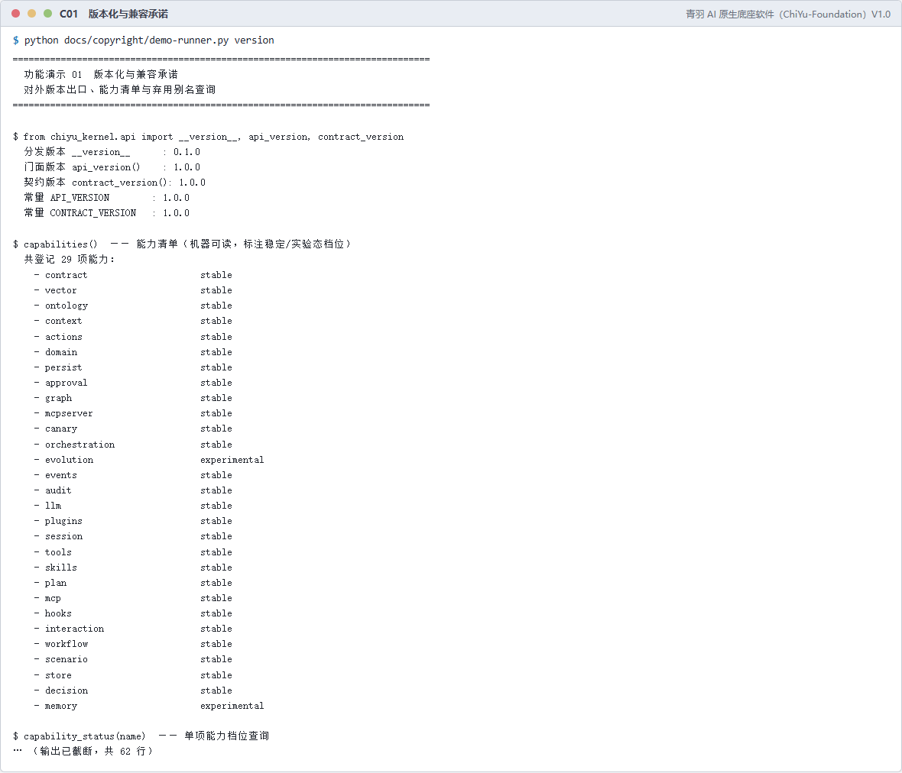